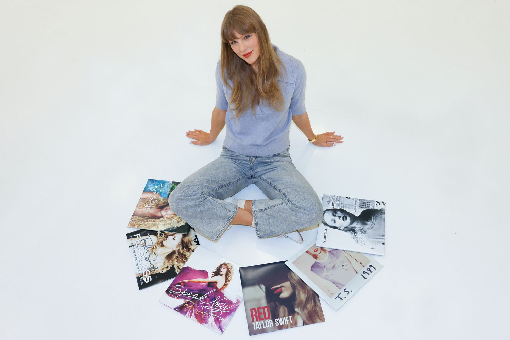

Taylor Swift anuncia compra de todos os seus master perdidos
Após 6 anos Taylor Swift aparece nas redes anunciando a compra de todos os seus 6 primeiros álbuns da carreira que haviam sido perdidos após a venda da gravadora Big Machine Record para Scooter Braun.
